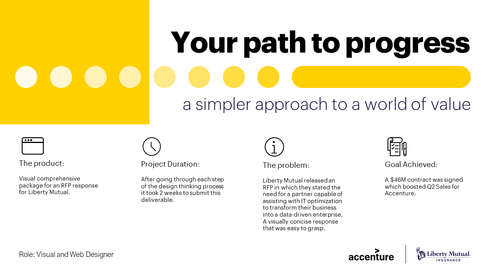
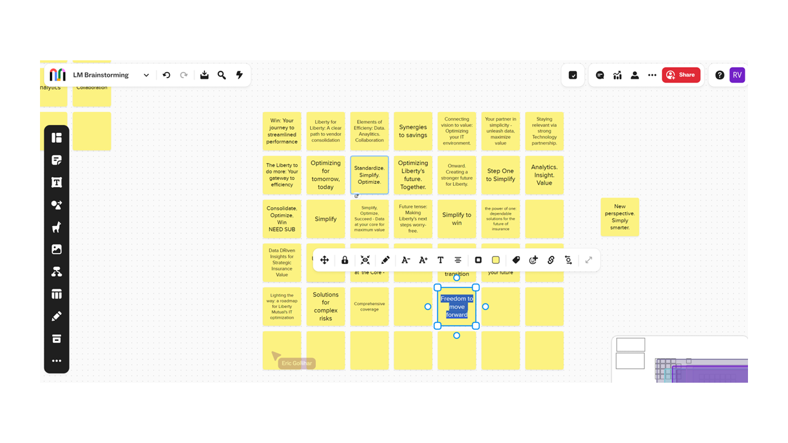
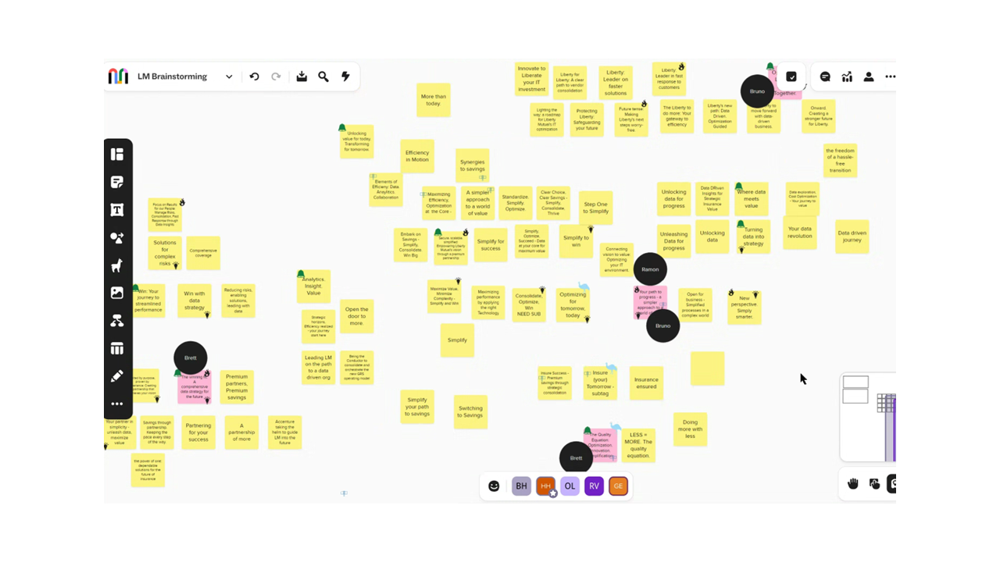
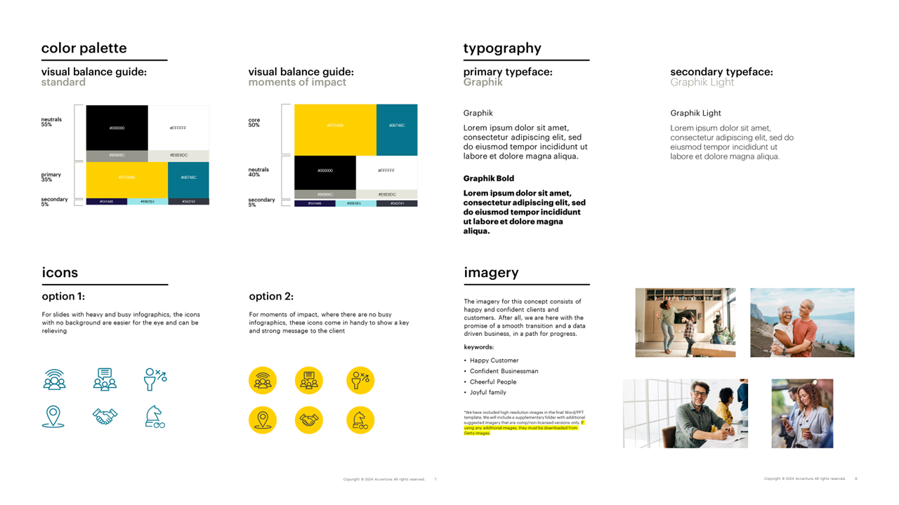

Liberty Mutual: IT and Data Optimization
Contributed as Visual and Web Designer. Brought $46M in revenue to the firm.Tools Utilized: , HTML, CSS, JavaScript, Figma, Adobe Creative Suite (Photoshop and Illustrator), MS Powerpoint.

The Liberty Mutual RFP response required a cohesive and comprehensive top-tier delivery package. Accenture was at a disadvantage due to the heavy presence of other consulting companies within the Liberty Mutual IT and Data wing.
We aimed to make a significant impact, starting by conducting thorough research and empathizing with our end users (the Liberty Mutual board). Conducted a brainstorming session to get to know our user better and define their pain points, interests and goals.
After conducting research and empathizing with our users, we initiated the ideation process for crafting a tagline and concept in response. This involves a brainstorming session where each of us proposes a tagline or concept that resonates with the solution the client or user is seeking.
Right after concluding the previous brainstorming session, we create an affinity diagram to filter through ideas and select the most impactful concepts that will resonate with our users.
Once the winning team was selected: 'Your path to progress - A simpler approach to a world of value,' I was tasked with building a design system for our response and all its elements (Typography, Color Palette, Iconography, Imagery and artwork treatment).

With a style guide and design system in place, I began working on the deliverables for this project, which included a PPT Presentation and a responsive website containing key response elements.
Wireframing, prototyping, testing, presenting to the sales and marketing team for feedback, are tasks that I performed daily until we achieve the desired product.